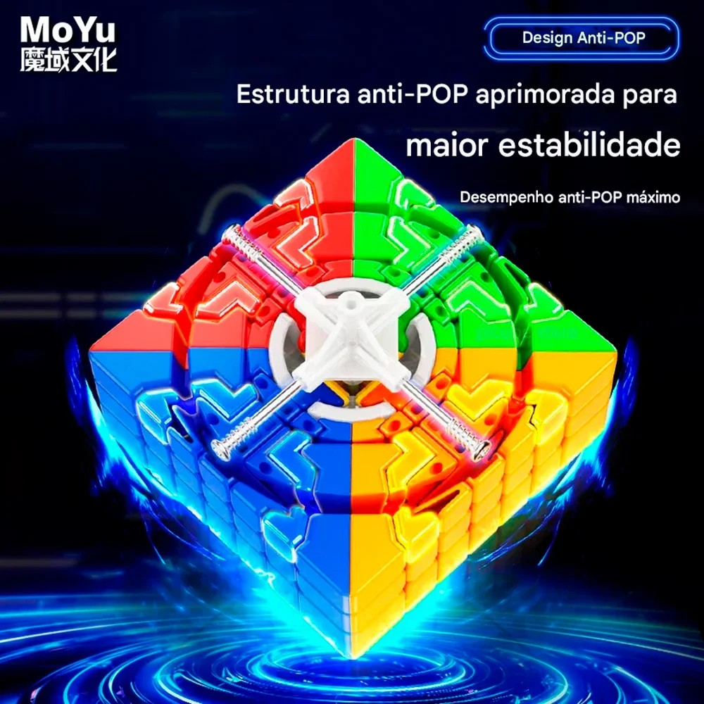
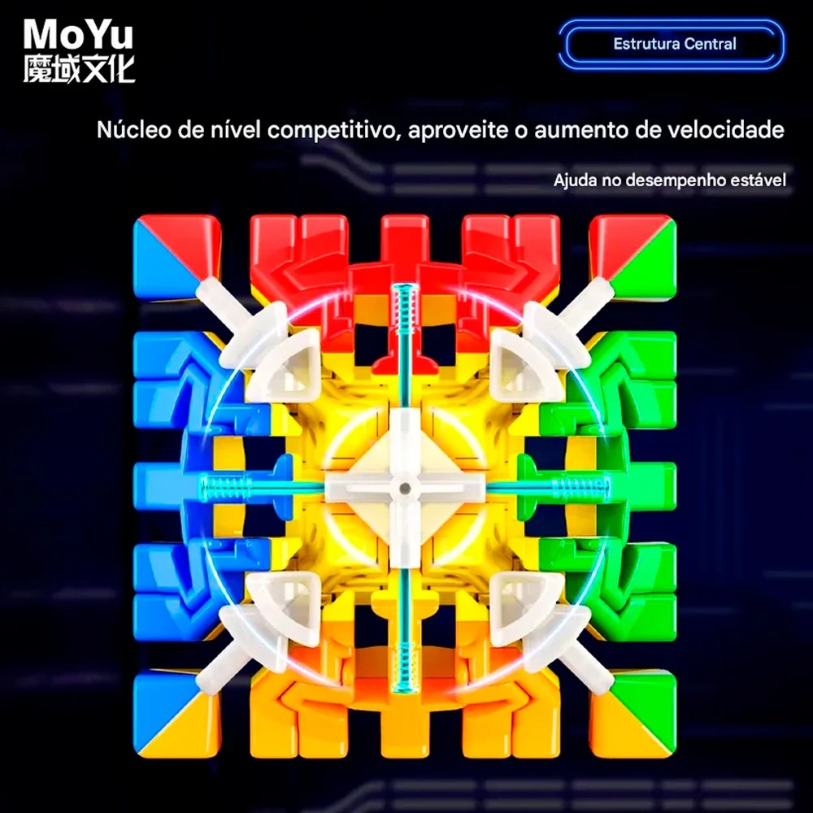

No começo, a combinação era sortear só quando todos os 150 números estivessem vendidos. Acontece que faz um tempo que as vendas pararam, e não seria justo deixar quem já participou esperando sem previsão nenhuma.
Por isso decidimos antecipar: o sorteio acontece no dia 30 de agosto de 2026, com todos os números vendidos ou não. Quem já comprou passa a ter uma data certa para saber o resultado — e quem ainda quiser entrar tem até lá para escolher o seu.
E fica a garantia: números não vendidos não concorrem. Se o resultado cair em um deles, seguimos para o prêmio seguinte até chegar em um número comprado. O prêmio vai, com certeza, para alguém que participou. 🏆
Na última segunda-feira (13/04/2026), levamos a Sasá ao veterinário por causa de falta de apetite e vômitos. O que parecia algo simples revelou um diagnóstico sério: doença renal crônica e um dos rins muito crescido por uma obstrução no ureter.
O agravante: o outro rim também tem insuficiência. Ou seja, os dois precisam trabalhar juntos para garantir função renal suficiente, e foi exatamente por isso que a cirurgia se tornou ainda mais urgente. Sem intervenção cirúrgica, ela teria sobrevivido pouquíssimo tempo.
O tratamento exigiu uma cirurgia delicada: a substituição do ureter por um bypass, um dispositivo que restaura a função renal e permite que ela volte a ter uma vida quase normal, com os cuidados que ela merece. Entre consultas, exames, internações, medicações e o procedimento cirúrgico em si, os gastos ultrapassaram R$ 10.000.
A Sasá já está em casa e se recuperando bem! Cada número dessa rifa nos ajuda a respirar um pouco mais fundo. Obrigado por fazer parte disso. 🐾




- Se o resultado estiver entre 001 e 150 e for um número vendido, esse é o número vencedor.
- Se cair fora da faixa ou em um número não vendido, usamos o 2º prêmio, depois o 3º, até o 5º.
- Se todos os 5 prêmios caírem fora, repetimos no concurso seguinte — e assim por diante, até sair um número válido e vendido.
Foram três meses de idas e vindas ao veterinário: retornos, exames de controle, ajustes de medicação e aquela ansiedade de esperar cada resultado. Não foi um caminho reto — teve semana boa e teve susto no meio.
Mas deu certo. Hoje ela está em casa, curada e bem: comendo sozinha, tomando sol na janela e implicando com todo mundo, do jeito que sempre foi. O bypass cumpriu exatamente o papel que precisava cumprir, e a vida dela voltou a ser uma vida normal de gato. 🐱
Cada número comprado, cada mensagem de carinho e cada link compartilhado em grupo de WhatsApp virou consulta, exame, medicação e a cirurgia que salvou a vida dela.
Foi muita gente: família, amigos, colegas de trabalho e até pessoas que nunca nos viram na vida e mesmo assim decidiram estender a mão. Não existe agradecimento do tamanho disso.
Se você comprou um número, torceu, rezou ou simplesmente espalhou o link por aí — obrigado, de verdade. 🐾
— Regis, Thales e Sasá 🐱